La confiance dans un monde sous surveillance
OpenPGP et le web of trust
Stephen Kitt / @thekittster
confiance.sk2.org

http://sethgodin.typepad.com/seths_blog/2014/04/maximizingworry.html
Stephen Kitt
Quelques similarités
« Native speaker » anglais
Blond foncé
Porteur de lunettes
N’a jamais travaillé à la NSA

Que peut-on y faire ?
Anatomie d’un téléchargement
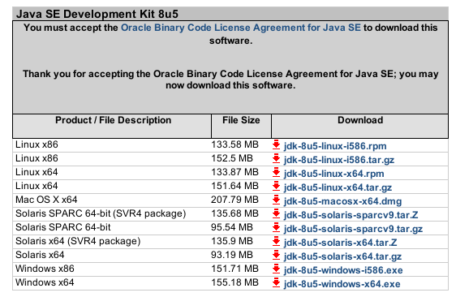Le long parcours d’un fichier

Premier écueil...
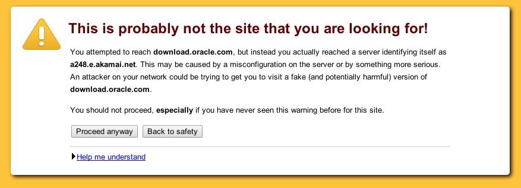MD5 à la rescousse !
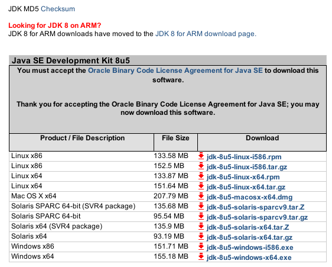Pas simple à utiliser
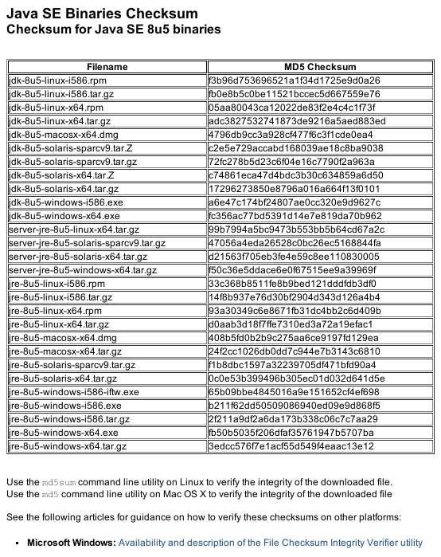Fragile
- MD5 est vulnérable
- Les signatures sont fournies depuis le même hôte que le téléchargement
- Pas de protection SSL sur les signatures
SSL ?


http://blog.cryptographyengineering.com/2014/04/attack-of-week-triple-handshakes-3shake.html
SSL : les grands principes
- Clés publiques / privées
- Clés publiques associées par des certificats à
des distinguished names et des alternative names
- Adresse électronique
- Entrée DNS
- Certificats identifiés par leur émetteur et leur objet
- Partage de certificats généralement dans les communications
- Confiance établie par signature de certificat
- Uniquement par des autorités de certification
- Valeur des signatures décidée par les navigateurs web
SSL : les grands défauts
- Ne protège que la communication
- Les autorités de certification ne sont pas
fiables
- Audits opaques
(https://bugs.debian.org/718434#239) - Compromises par le passé (DigiNotar, VeriSign...)
- Audits opaques
- Les certificats ne sont pas fiables
- Google v. ANSSI
- Les connexions sont vulnérables aux attaques « MITM »
- La révocation ne fonctionne pas
(https://www.imperialviolet.org/2014/04/19/revchecking.html)
On ne peut pas faire confiance aux connexions sur Internet
Peut-on mieux faire ?
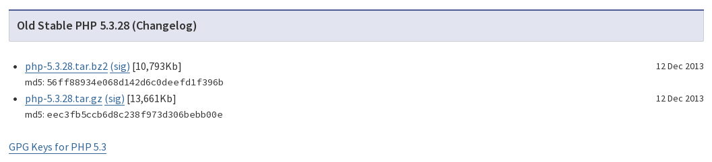Vérification GPG
$ gpg --verify php-5.3.28.tar.bz2.asc php-5.3.28.tar.bz2
gpg: Signature faite le mer. 11 déc. 2013 01:55:50 CET
gpg: avec la clef DSA 0x2F7956BC5DA04B5D
gpg: Bonne signature de « Stanislav Malyshev (PHP key) <smalyshev@gmail.com> » [inconnu]
gpg: alias « Stanislav Malyshev (PHP key) <stas@php.net> » [inconnu]
gpg: alias « Stanislav Malyshev (PHP key) <smalyshev@sugarcrm.com> » [inconnu]
gpg: Attention : cette clef n'est pas certifiée avec une signature de confiance.
gpg: Rien n'indique que la signature appartient à son propriétaire.
Empreinte de clef principale : F382 5282 6ACD 957E F380 D39F 2F79 56BC 5DA0 4B5D
La signature est bonne ...
... mais on ne sait pas d’où vient la clé.
(On bénéficie quand même d’un niveau d’indirection supplémentaire par rapport à MD5.)
OpenPGP : les grands principes
- Clés publiques / privées
- Clés associées à des user ids
- Nom, adresse électronique
- Photo
- Clés identifiées par leur empreinte
- Partage de clés « hors bande »
- Réseau de serveurs de clés
- Trousseaux de clés
- Confiance établie par signature de clé
- Par n’importe quelle autre clé (presque)
- Appréciation individuelle de la valeur des signatures
L’arbre des clés PHP
On peut encore mieux faire !
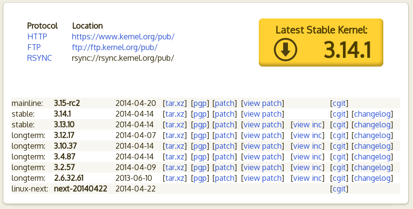Une signature de confiance
Sur un tag du noyau Linux :
$ git tag -v v3.14
object 455c6fdbd219161bd09b1165f11699d6d73de11c
type commit
tag v3.14
tagger Linus Torvalds <torvalds@linux-foundation.org> 1396237223 -0700
Linux 3.14
gpg: Signature faite le lun. 31 mars 2014 05:40:23 CEST
gpg: avec la clef RSA 0x79BE3E4300411886
gpg: Bonne signature de « Linus Torvalds <torvalds@linux-foundation.org> » [totale]
Une signature de confiance
Sur une archive du noyau Linux :
$ gpg --verify linux-3.14.1.tar.sign linux-3.14.1.tar
gpg: Signature faite le lun. 14 avril 2014 15:51:59 CEST
gpg: avec la clef RSA 0x38DBBDC86092693E
gpg: Bonne signature de « Greg Kroah-Hartman (Linux kernel stable release signing key)
<greg@kroah.com> » [totale]
L’arbre des clés Linux
Le web of trust
- Chaque ensemble de clés connectées constitue une toile de confiance
- La multiplication des connexions rend la toile résistante
- Chacun peut décider du niveau de confiance de chaque signataire (owner trust)
- GnuPG calcule le niveau de confiance de chaque clé
- La toile la plus importante est le strong
set
- Près de 55 000 clés
- Distance moyenne de 6,1
- 9,8 signatures en moyenne (la clé la plus signée en compte 694)
- Très résistant (la taille du strong set décroît de façon linéaire avec la suppression de clés aléatoires)
Pour explorer le web of trust : http://pgp.cs.uu.nl/
Linux et OpenPGP
- Modèle de développement ouvert
- Contributions ouvertes à tous, par patches échangés par courrier électronique ou sur Facebook
- ~ 12,5 millions de lignes de code
- ~ 1 100 développeurs actifs
- > 7 modifications intégrées par heure
- Quelques dizaines de dépôts
gitsurkernel.org - Comptes
kernel.orglimités par clés OpenPGP- Pour obtenir un compte, on doit avoir une clé
signée par une clé déjà utilisée sur
kernel.org
- Pour obtenir un compte, on doit avoir une clé
signée par une clé déjà utilisée sur
- Tous les tags de version et les archives téléchargeables sont signés
Source : « Who writes Linux 2013 »
Debian
~ 20 000 projets upstream
~ 1
milliard de lignes de code
↓
 Debian
Debian
~ 1 000 « développeurs »
~ 1 100 contributeurs actifs
~ 4 paquets modifiés par heure
12 11 plateformes supportées
↓
Utilisateurs / Distributions dérivées
Debian et OpenPGP
- Pour obtenir des droits d’upload, il faut avoir une clé signée par deux développeurs Debian
- Tous les uploads doivent être signés par une clé dans le trousseau Debian
- Tous les fichiers disponibles en téléchargement sont signés (indirectement) par une clé d’archive
- Les clés OpenPGP sont le moyen d’accès à l’infrastructure Debian
À qui faites-vous confiance ?
- Maven
pip- RubyGems (compromis en janvier 2013)
- CPAN
npm- Des scripts JS minifiés sur un CDN
- Des PPA référencés sur un forum
- ...
Peu s’en soucient... https://github.com/grant-olson/rubygems-openpgp-ca.org/blob/master/public/blog/nobody-cares-about-signed-gems.html
curl -L https://www.opscode.com/chef/install.sh | sudo bashEt vous ?
Vous aussi pouvez participer !
Comment participer
Étape 1 : créez une clé OpenPGP
Voir ci-dessous les instructions selon votre plateforme :
La version courte Linux / Windows
Installez gnupg ou gnupg2 à partir de
votre distribution Linux ou Gpg4win sous Windows.
$ gpg --gen-key
Répondez « 1 » (RSA et RSA), « 4096 » (taille de clé), « 2y » (durée de validité initiale), confirmez la date d’expiration, saisissez vos prénom et nom (ensemble en réponse à l’invite « Nom réel : »), votre adresse électronique, ne saisissez pas de commentaire, confirmez (tapez « O »), saisissez votre passphrase.
Lorsque gpg vous demande davantage d’entropie, lancez
une recherche sur votre disque, tapez un long texte sur le
clavier... Ça peut prendre plusieurs minutes !
pub 4096R/0x3CF0E04BDEDF2B2C 2014-04-23 [expire : 2016-04-22]
Empreinte de la clef = 40EA 80F6 CFD0 29F7 91BA 38A9 3CF0 E04B DEDF 2B2C
uid [ ultime ] Stephen Kitt <steve@sk2.org>
sub 4096R/0x07AB1094CDD28FEE 2014-04-23 [expire : 2016-04-22]
Notez le numéro de votre clé, 0x3CF0E04BDEDF2B2C
ici. Étape 2...
La version courte Mac OS X
Installez GPGTools.
Lorsque l’outil d’installation vous propose de générer une nouvelle paire de clés, remplissez les informations demandées et corrigez la longueur de clé :
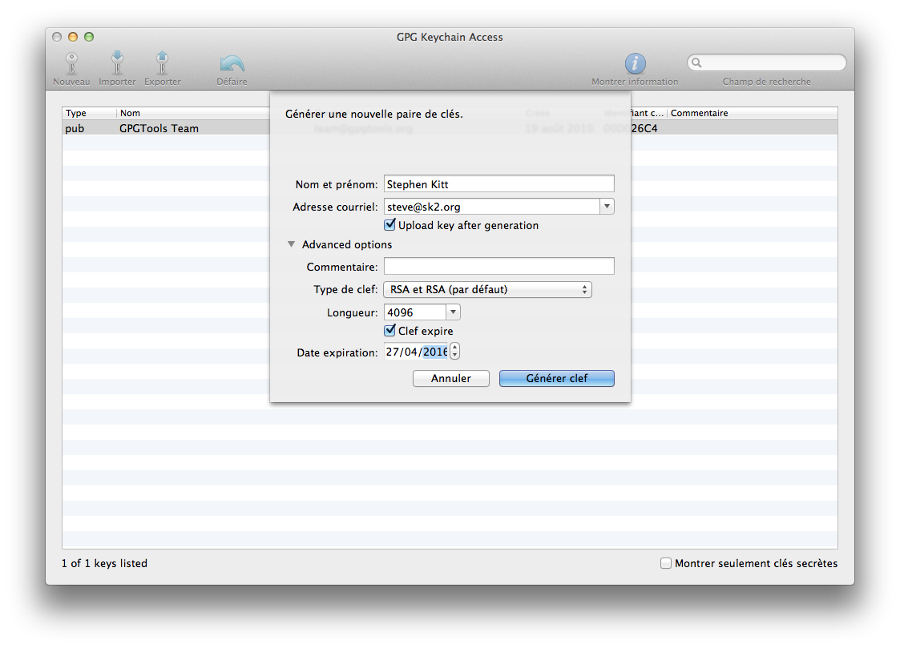L’outil créera votre clé et la mettra à disposition sur les serveurs de clés, ce qui vous permet de passer directement à l’étape 3...
Linux : installation
Installez gnupg (ou gnupg2 si votre
distribution le propose) et, si vous souhaitez une interface
graphique, gpa ou kleopatra (KDE) :
apt-get install gpa
apt-get install kleopatra
yum install gpa
yum install kleopatra
Pour rafraîchir vos clés automatiquement :
apt-get install parcimonie
Paramétrage
Créez un dossier ~/.gnupg et le fichier
~/.gnupg/gpg.conf comme suit (merci https://we.riseup.net/riseuplabs+paow/openpgp-best-practices) :
# Identifiants distincts des clés à l'affichage
fixed-list-mode
# Empreintes longues pour réduire les risques de spoofing
keyid-format 0xlong
with-fingerprint
# Privilégions des algorithmes de hash plus résistants
personal-digest-preferences SHA512 SHA384 SHA256 SHA224
# De même dans les clés
default-preference-list SHA512 SHA384 SHA256 SHA224 AES256 AES192 AES CAST5 BZIP2 ZLIB ZIP Uncompressed
# Il faut utiliser un agent (cf. https://www.debian-administration.org/users/dkg/weblog/64)
use-agent
# Il faut connaître le niveau de confiance
verify-options show-uid-validity
list-options show-uid-validity
# SHA512 pour les nouveaux certificats
cert-digest-algo SHA512
# Serveur de clés qui fonctionne, imposé dans tous les cas
keyserver hkps://hkps.pool.sks-keyservers.net
keyserver-options ca-cert-file=~/.gnupg/sks-keyservers.netCA.pem
keyserver-options no-honor-keyserver-url
Enregistrez https://sks-keyservers.net/sks-keyservers.netCA.pem
dans ~/.gnupg/.
Sous Windows, tout ça se trouve dans votre dossier
« Application Data »
Création d’une clé (1/4)
(Vous pouvez également créer une clé avec gpa.)
$ gpg --gen-key
gpg (GnuPG) 2.0.22; Copyright (C) 2013 Free Software Foundation, Inc.
This is free software: you are free to change and redistribute it.
There is NO WARRANTY, to the extent permitted by law.
Sélectionnez le type de clef désiré :
(1) RSA et RSA (par défaut)
(2) DSA et Elgamal
(3) DSA (signature seule)
(4) RSA (signature seule)
Quel est votre choix ?
Répondez « 1 » (RSA et RSA).
les clefs RSA peuvent faire entre 1024 et 4096 bits de longueur.
Quelle taille de clef désirez-vous ? (2048)
Répondez « 4096 » (à moins de vouloir utiliser une carte à puce ; lisez la documentation dans ce cas...).
Création d’une clé (2/4)
La taille demandée est 4096 bits
Veuillez indiquer le temps pendant lequel cette clef devrait être valable.
0 = la clef n'expire pas
<n> = la clef expire dans n jours
<n>w = la clef expire dans n semaines
<n>m = la clef expire dans n mois
<n>y = la clef expire dans n ans
Pendant combien de temps la clef est-elle valable ? (0)
Répondez « 2y » pour commencer (on peut toujours reporter l’expiration) et confirmez.
La clef expire le ven. 22 avril 2016 23:40:00 CEST
Est-ce correct ? (o/N) o
GnuPG doit construire une identité pour identifier la clef.
Nom réel :
Création d’une clé (3/4)
Indiquez votre nom tel qu’écrit sur vos pièces d’identité, et votre adresse électronique principale (on peut en ajouter d’autres plus tard) ; ne pas ajouter de commentaire. Confirmez avec « O ».
Nom réel : Stephen Kitt
Adresse électronique : steve@sk2.org
Commentaire :
Vous avez sélectionné cette identité :
« Stephen Kitt <steve@sk2.org> »
Faut-il modifier le (N)om, le (C)ommentaire, l'(A)dresse électronique
ou (O)ui/(Q)uitter ? O
Une phrase de passe est nécessaire pour protéger votre clef secrète.
Vous devez alors saisir votre passphrase, dans l’agent
pinentry si l’agent GnuPG est démarré, dans votre
terminal sinon.
Votre système peut alors vous réclamer de l’activité pour générer des données aléatoires.
Création d’une clé (4/4)
Après quelques minutes vous devriez obtenir votre clé :
gpg: /home/steve/.gnupg-test/trustdb.gpg : base de confiance créée
gpg: clef 0x3CF0E04BDEDF2B2C marquée de confiance ultime.
les clefs publique et secrète ont été créées et signées.
gpg: vérification de la base de confiance
gpg: 3 marginale(s) nécessaire(s), 1 complète(s) nécessaire(s),
modèle de confiance PGP
gpg: profondeur : 0 valables : 1 signées : 0
confiance : 0 i., 0 n.d., 0 j., 0 m., 0 t., 1 u.
gpg: la prochaine vérification de la base de confiance aura lieu le 2016-04-22
pub 4096R/0x3CF0E04BDEDF2B2C 2014-04-23 [expire : 2016-04-22]
Empreinte de la clef = 40EA 80F6 CFD0 29F7 91BA 38A9 3CF0 E04B DEDF 2B2C
uid [ ultime ] Stephen Kitt <steve@sk2.org>
sub 4096R/0x07AB1094CDD28FEE 2014-04-23 [expire : 2016-04-22]
Fichiers de sauvegarde
Pour sauvegarder vos clés (publique et privée) :
$ gpg --output 0x3CF0E04BDEDF2B2C-public.key --export 0x3CF0E04BDEDF2B2C
$ gpg --output 0x3CF0E04BDEDF2B2C-private.key --export-secret-keys 0x3CF0E04BDEDF2B2C
Pensez à refaire l’opération à chaque modification de clé !
Certificat de révocation
Si jamais votre clé est compromise, ou si vous en perdez le contrôle (vous oubliez la passphrase...), vous aurez besoin d’un certificat de révocation. Il faut le générer pendant que vous le pouvez (avec votre identifiant de clé) :
$ gpg --output 0x3CF0E04BDEDF2B2C-revoke.asc --gen-revoke 0x3CF0E04BDEDF2B2C
sec 4096R/0x3CF0E04BDEDF2B2C 2014-04-23 Stephen Kitt <steve@sk2.org>
Faut-il créer un certificat de révocation pour cette clef ? (o/N) o
choisissez la cause de la révocation :
0 = Aucune raison indiquée
1 = La clef a été compromise
2 = La clef a été remplacée
3 = La clef n'est plus utilisée
Q = Annuler
(Vous devriez sûrement sélectionner 1 ici)
Quelle est votre décision ? 0
Entrez une description facultative, en terminant par une ligne vide :
>
Cause de révocation : Aucune raison indiquée
(Aucune description donnée)
Est-ce d'accord ? (o/N) o
Une phrase de passe est nécessaire pour déverrouiller la clef secrète de
l'utilisateur : « Stephen Kitt <steve@sk2.org> »
clef RSA de 4096 bits, identifiant 0x3CF0E04BDEDF2B2C, créée le 2014-04-23
sortie forcée avec armure ASCII.
Certificat de révocation créé.
Veuillez le déplacer sur un support que vous pouvez cacher ; toute personne
accédant à ce certificat peut l'utiliser pour rendre votre clef inutilisable.
Imprimer ce certificat et le stocker ailleurs est une bonne idée, au cas où le
support devienne illisible. Attention quand même : le système d'impression
utilisé pourrait stocker ces données et les rendre accessibles à d'autres.
Mettez le fichier généré à l’abri...
Autres adresses électroniques
Avant de faire signer votre clé, ajoutez les autres adresses électroniques que vous souhaitez y voir figurer :
$ gpg --edit-key 0x3CF0E04BDEDF2B2C
gpg (GnuPG) 2.0.22; Copyright (C) 2013 Free Software Foundation, Inc.
This is free software: you are free to change and redistribute it.
There is NO WARRANTY, to the extent permitted by law.
La clef secrète est disponible.
pub 4096R/0x3CF0E04BDEDF2B2C créé : 2014-04-23 expire : 2016-04-22 utilisation : SC
confiance : ultime validité : ultime
sub 4096R/0x07AB1094CDD28FEE créé : 2014-04-23 expire : 2016-04-22 utilisation : E
[ ultime ] (1). Stephen Kitt <steve@sk2.org>
gpg> adduid
Nom réel : Stephen Kitt
Adresse électronique : skitt@debian.org
Commentaire :
Vous avez sélectionné cette identité :
« Stephen Kitt <skitt@debian.org> »
Faut-il modifier le (N)om, le (C)ommentaire, l'(A)dresse électronique
ou (O)ui/(Q)uitter ? O
Une phrase de passe est nécessaire pour déverrouiller la clef secrète de
l'utilisateur : « Stephen Kitt <steve@sk2.org> »
clef RSA de 4096 bits, identifiant 0x3CF0E04BDEDF2B2C, créée le 2014-04-23
pub 4096R/0x3CF0E04BDEDF2B2C créé : 2014-04-23 expire : 2016-04-22 utilisation : SC
confiance : ultime validité : ultime
sub 4096R/0x07AB1094CDD28FEE créé : 2014-04-23 expire : 2016-04-22 utilisation : E
[ ultime ] (1) Stephen Kitt <steve@sk2.org>
[ inconnue] (2). Stephen Kitt <skitt@debian.org>
gpg> save
La suite, c’est à l’étape 2...
Windows : installation
Installez Gpg4win, en précisant :
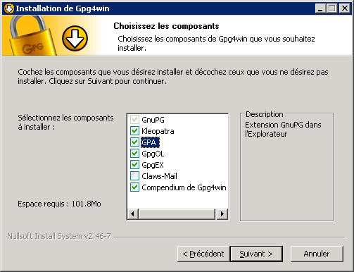(Vous pouvez décocher Kleopatra, et si vous n’avez pas Outlook, GpgOL.)
Paramétrage
Dans votre dossier « Application Data », créez un dossier
gnupg s’il n’existe pas déjà, et créez dans ce dossier fichier
gpg.conf comme suit (merci https://we.riseup.net/riseuplabs+paow/openpgp-best-practices) :
# Identifiants distincts des clés à l'affichage
fixed-list-mode
# Empreintes longues pour réduire les risques de spoofing
keyid-format 0xlong
with-fingerprint
# Privilégions des algorithmes de hash plus résistants
personal-digest-preferences SHA512 SHA384 SHA256 SHA224
# De même dans les clés
default-preference-list SHA512 SHA384 SHA256 SHA224 AES256 AES192 AES CAST5 BZIP2 ZLIB ZIP Uncompressed
# Il faut utiliser un agent (cf. https://www.debian-administration.org/users/dkg/weblog/64)
use-agent
# Il faut connaître le niveau de confiance
verify-options show-uid-validity
list-options show-uid-validity
# SHA512 pour les nouveaux certificats
cert-digest-algo SHA512
# Serveur de clés qui fonctionne, imposé dans tous les cas
keyserver hkps://hkps.pool.sks-keyservers.net
keyserver-options ca-cert-file=...\Application Data\gnupg\sks-keyservers.netCA.pem
keyserver-options no-honor-keyserver-url
(Complétez la partie ...\Application Data.)
Enregistrez https://sks-keyservers.net/sks-keyservers.netCA.pem dans le même dossier.
Création d’une clé (1/2)
(Vous pouvez également créer une clé en ligne de commande.)
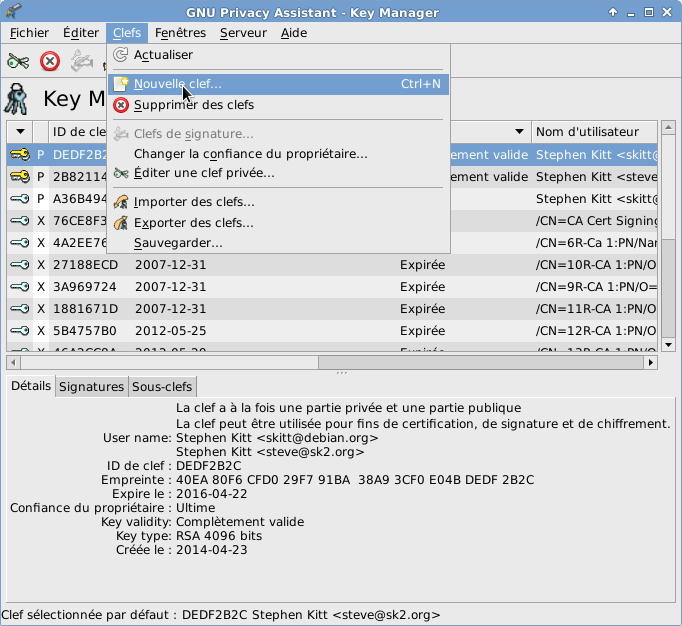Création d’une clé (2/2)
Choisissez la taille de clé, saisissez vos nom et adresse électronique, et choisissez une date d’expiration :
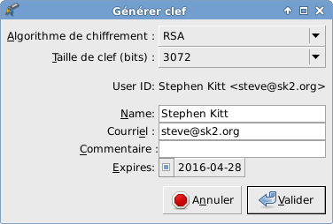Fichier de sauvegarde
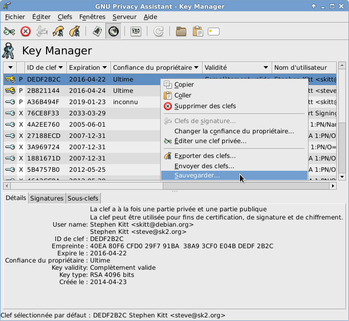Le fichier généré contient vos clés publique et privée.
La suite se fait en ligne de commande : générez votre certificat de révocation.
Mac OS X : installation
Installez GPGTools.
Lorsque l’outil d’installation vous propose de générer une nouvelle paire de clés, remplissez les informations demandées et corrigez la longueur de clé :
L’outil créera votre clé et la mettra à disposition sur les serveurs de clés.
Paramétrage
Créez un dossier ~/.gnupg et le fichier
~/.gnupg/gpg.conf comme suit (merci https://we.riseup.net/riseuplabs+paow/openpgp-best-practices) :
# Identifiants distincts des clés à l'affichage
fixed-list-mode
# Empreintes longues pour réduire les risques de spoofing
keyid-format 0xlong
with-fingerprint
# Privilégions des algorithmes de hash plus résistants
personal-digest-preferences SHA512 SHA384 SHA256 SHA224
# De même dans les clés
default-preference-list SHA512 SHA384 SHA256 SHA224 AES256 AES192 AES CAST5 BZIP2 ZLIB ZIP Uncompressed
# Il faut utiliser un agent (cf. https://www.debian-administration.org/users/dkg/weblog/64)
use-agent
# Il faut connaître le niveau de confiance
verify-options show-uid-validity
list-options show-uid-validity
# SHA512 pour les nouveaux certificats
cert-digest-algo SHA512
# Serveur de clés qui fonctionne, imposé dans tous les cas
keyserver hkps://hkps.pool.sks-keyservers.net
keyserver-options ca-cert-file=~/.gnupg/sks-keyservers.netCA.pem
keyserver-options no-honor-keyserver-url
Enregistrez https://sks-keyservers.net/sks-keyservers.netCA.pem
dans ~/.gnupg/.
Certificat de révocation
Si jamais votre clé est compromise, ou si vous en perdez le contrôle (vous oubliez la passphrase...), vous aurez besoin d’un certificat de révocation. Il faut le générer pendant que vous le pouvez (avec votre identifiant de clé) :

Mettez le fichier généré à l’abri...
Fichiers de sauvegarde
Pour sauvegarder vos clés (publique et privée), cliquez sur le bouton « Exporter » :
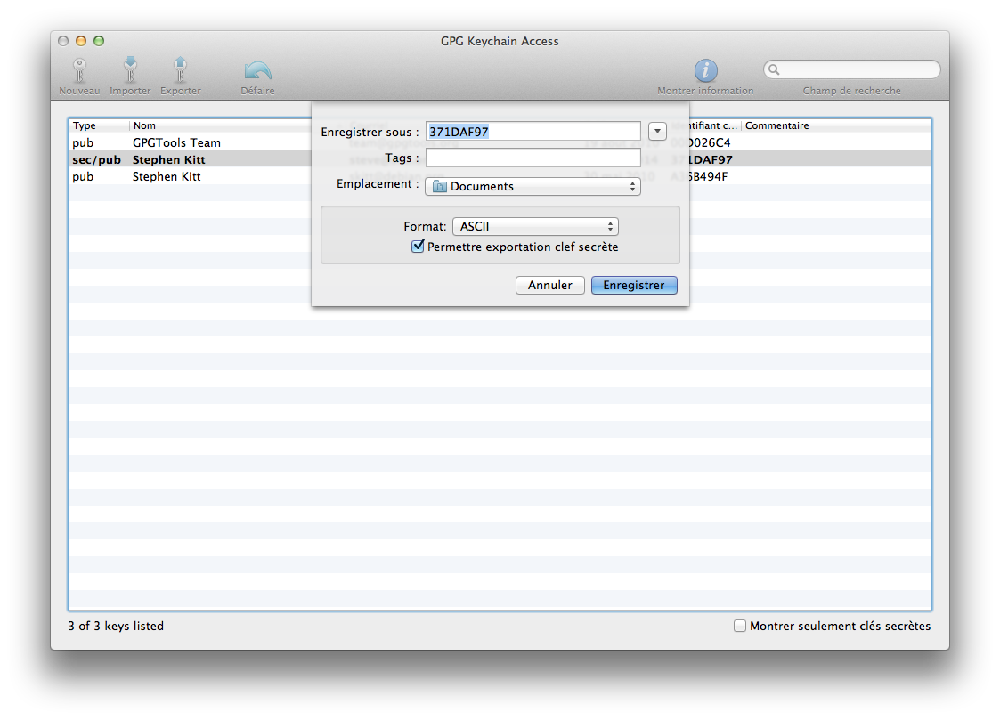Pensez à refaire l’opération à chaque modification de clé !
Autres adresses électroniques
Avant de faire signer votre clé, ajoutez les autres adresses électroniques que vous souhaitez y voir figurer, à partir du menu contextuel sur la clé :

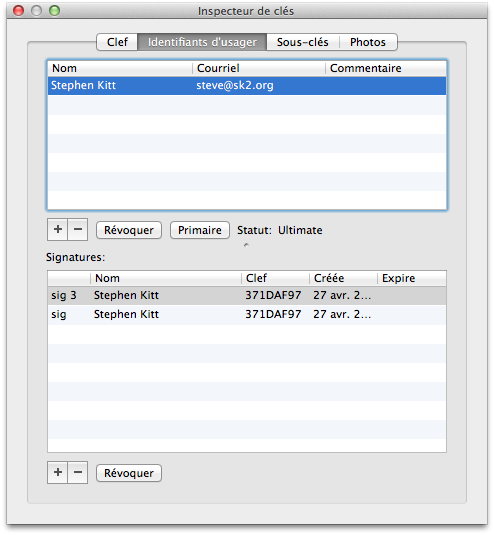
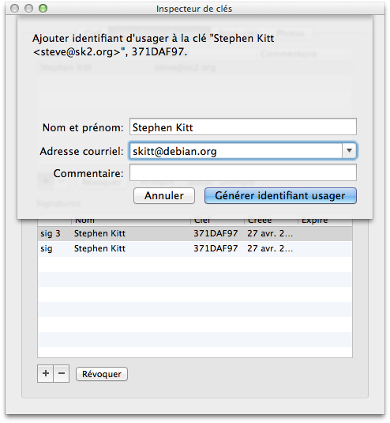
Comment participer
Étape 2 : partagez votre clé OpenPGP
Voir ci-dessous les instructions selon votre cas :
Comment participer
Étape 3 : imprimez votre clé
Vous aurez besoin de
- vos prénom et nom
- vos adresses électroniques
- le type et l’identifiant de votre clé
- l’empreinte de votre clé
sur papier (papier libre, carte de visite...).
apt-get install signing-party ghostscript
gpg-key2ps -p a4 0x3CF0E04BDEDF2B2C > cles.ps
ps2pdf cles.ps cles.pdf
Comment participer
Étape 4 : rencontrez des gens !
Key-signing party ce soir à La Plateforme
https://wiki.debian.org/Keysigning/Offers
N’oubliez pas une pièce d’identité !
Comment participer
Étape 5a : demandez des autographes
Donnez votre empreinte OpenPGP
Montrez votre pièce d’identité

Comment participer
Étape 5b : proposez des autographes
Vérifiez des empreintes OpenPGP et des pièces d’identité
- La photo doit correspondre à la personne
- Le nom doit correspondre à l’empreinte
Gardez les empreintes OpenPGP vérifiées
Comment participer
Étape 6 : signez les clés
Signature de clé en ligne de commande
Récupérez la clé à signer :
$ gpg --recv-key 0x3CF0E04BDEDF2B2C
Signez la :
$ gpg --sign-key 0x3CF0E04BDEDF2B2C
pub 4096R/0x3CF0E04BDEDF2B2C créé : 2014-04-30 expire : 2019-01-23 utilisation : SC
confiance : inconnu validité : inconnu
sub 4096R/0x8F2EAA712B821144 créé : 2010-05-30 expire : 2019-01-23 utilisation : E
[ inconnue] (1). Stephen Kitt <skitt@debian.org>
[ inconnue] (2) Stephen Kitt <steve@sk2.org>
Voulez-vous vraiment signer toutes les identités ? (o/N)
Si les informations correspondent à l’empreinte vérifiée, confirmez (deux fois) et saisissez votre passphrase. En l’absence de message d’erreur la clé est signée.
Signature de clé avec gpa (1/2)
Récupérez la clé à signer :
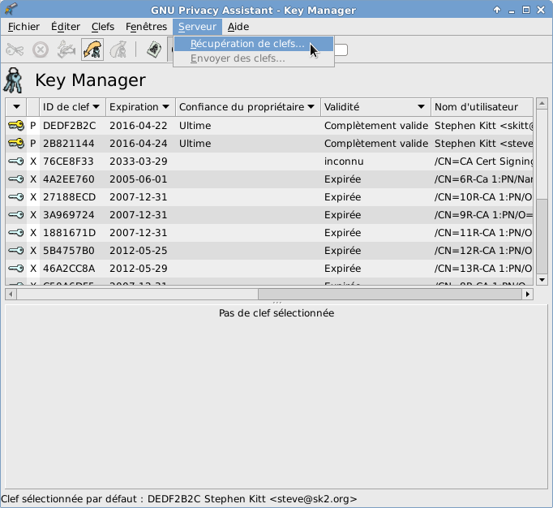 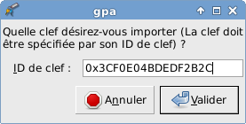Signature de clé avec gpa (2/2)
Signez la, à partir du menu contextuel sur la clé :
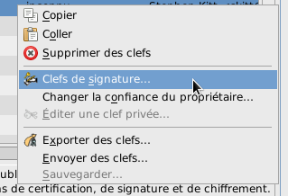 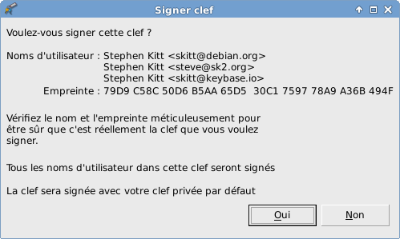Signature de clé avec GPGTools (1/2)
Récupérez la clé à signer :
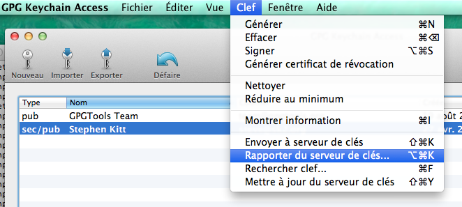 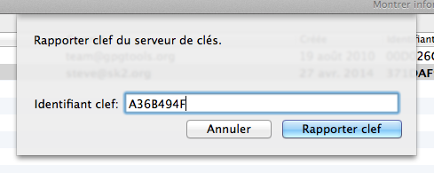Signature de clé avec GPGTools (2/2)
Signez la, à partir du menu contextuel sur la clé :
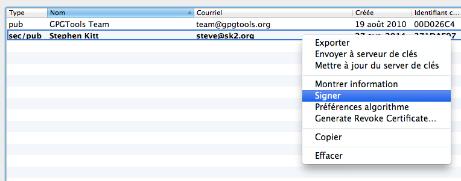Comment participer
Étape 7 : envoyez les clés signées
Pour vous assurer que vos clés signées vont aux bonnes personnes, exportez-les et envoyez-les par mail (de préférence chiffré).
Avec gpg :
$ gpg --armor --output 0x3CF0E04BDEDF2B2C-signed.key --export 0x3CF0E04BDEDF2B2C
Avec gpa :
Avec GPGTools :
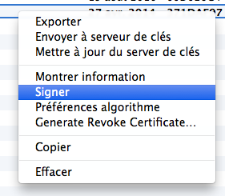Comment participer
Étape 8 : intégrez les signatures de votre clé
Lorsque vous recevez des signatures de votre clé, intégrez-les avec votre outil préféré.
Avec gpg :
$ gpg --import 0x3CF0E04BDEDF2B2C-signed.key
Avec gpa ou GPGTools, utilisez le bouton « Importer »
dans la barre d’outils.
Exportez de nouveau votre clé publique vers les serveurs de clé, et le lundi suivant vous pourrez voir l’évolution de votre clé dans le web of trust sur http://pgp.cs.uu.nl/ !
Bienvenue dans le web of trust !
Pour aller plus loin
- Confiance : « Reflections on trusting trust »
- Confidentialité : Tails, Tor Project, Schleuder, DNSSEC, SSHFP, DANE, etc.
- Stockage sûr : Camlistore
- Pourquoi Johnny ne peut-il pas chiffrer ?
- Best practices OpenPGP
- Implication dans des projets : OpenHatch, Eudyptula Challenge, Debian (OTR, durcissement, reproductibilité)
- Nouvelle forme de web of trust : Keybase
- « On learning, growth, and trust » : leçons de Heartbleed pour les communautés libres
- « Heartbleed should bleed X.509 to death »
- Applied Crypto Hardening
Merci !
Des questions ?
N’oubliez pas la key-signing party
ce soir à La Plateforme
© 2014 Stephen Kitt, disponible sous licence CC-BY-SA 4.0

Moteur reveal.js © 2014
Hakim El Hattab, disponible sous licence MIT
Graphes pilotés par arbor.js
© 2011 Samizdat Drafting Co., disponible sous licence MIT
Photo d’Edward Snowden © 2013 Laura Poitras / Praxis Films,
disponible sous licence CC-BY 3.0
Vignettes xkcd © 2008, 2014 Randall
Munroe, disponible sous licence CC-BY-NC 2.5
Lignes de code comptées par SLOCCount de David A. Wheeler